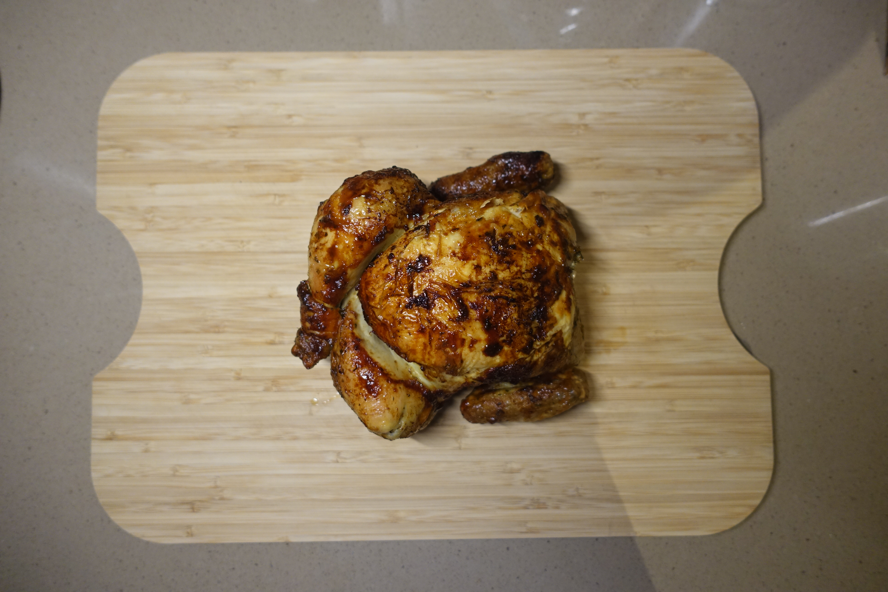
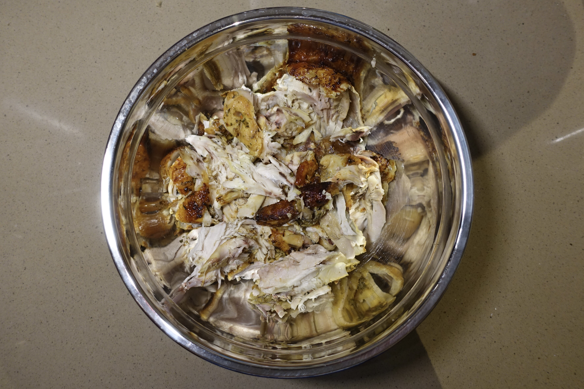
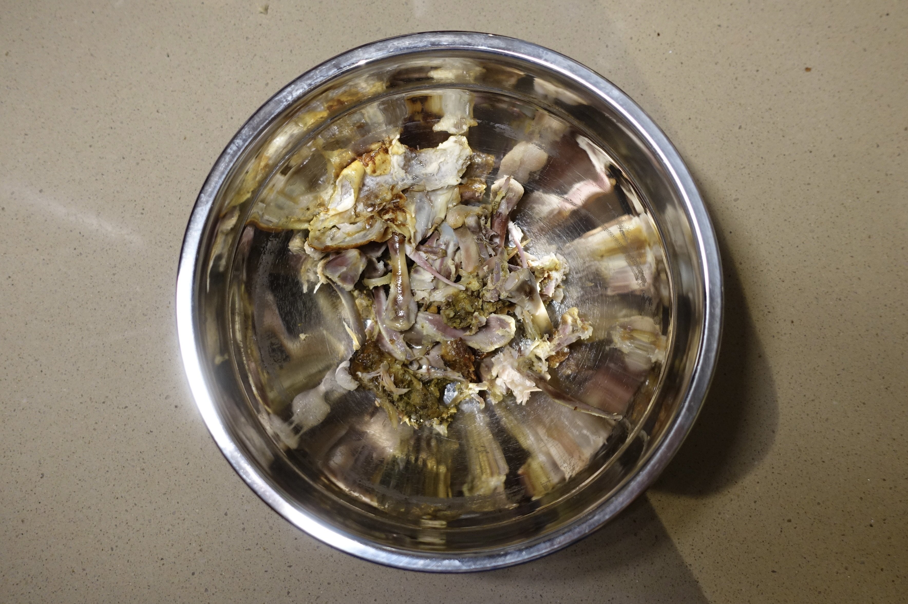
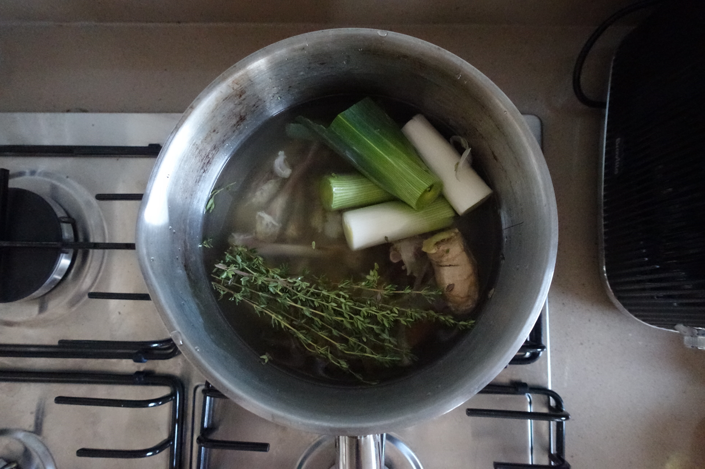

ingredients
a chicken / oyster mushroom / closed cap mushroom / leek / carrot / cabbage / rosemary / thyme / noodle of your choice
method
step 1 :
buy a chicken

step 2 :
seperate the bones from the meat


step 3 :
boil the bones with water, 2tbsp salt, 1tbsp vinegar, pepper, leek, ginger and thyme for 6+ hours

step 4 :
add the rest of the ingredients and boil for additional 7 minutes
and enjoy!